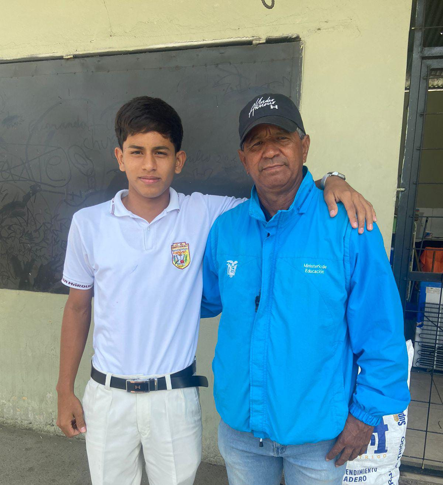

OLIMPIADAS 2024 club HUMBERTINO
Las Olimpiadas es un deporte donde se realiza cada año para el bienestar de los estudiantes y ejercitar tanto sea su mentalidad fisica les sirve para desestrezarse a traves de los juegos de futbol he ir escalando para ganar la final al enfrentarse a algunos equipos para ser el ganador
Las olimpiadas escolares son un evento llevado a cabo en centros escolares con el objetivo de fomentar la actividad física, promover los valores del deporte y reforzar hábitos saludables entre el alumnado.
Para ello, se ofrece una serie de actividades que se pueden llevar a cabo durante las olimpiadas deportivas escolares y que contribuyen al desarrollo integral de los estudiantes. Es importante contar con las instalaciones deportivas y recursos adecuados para cada disciplina.
La Entrevista y unas preguntas
Aqui tuvimos la entrevista con el integrante de la comision de deporte, les isimos unas pequeñas preguntas. ↓
- ¿Como se organizaron para mantener a todos los equipos en orden?
- ¿Cual ha sido su actitud ante las sustituciones que se le han presentado en el campo de juego?
- ¿Que dificultad se le ha presentado antes estos eventos deportivos?
- ¿Como se sintio a la hora de recibir este papel tan importante para estudiante al pertenecer a la comision de deporte?
- ¿Que labor a desempeñado en la comision de deporte?
FOTOS
Aqui tuvimos las fotos despues de la entrevista con el director tecnico
fue una experiencia muy increible al hablar con el director del equipo.
Fue un placer y un honor tener una platica con una persona sencilla y humilde como lo es el lcd de la comision de deporte
CONTEXTO
Se necesita un espacio adecuado para la práctica de las diferentes disciplinas deportivas de las olimpiadas deportivas escolares. Si la institución educativa no dispone de todas las instalaciones necesarias, se pueden buscar convenios con otros centros educativos o entidades deportivas de la comunidad.
Espacios auxiliares: Además de los espacios asignados para las disciplinas deportivas, el evento deberá contar con zonas auxiliares, como vestuarios, baños, áreas de calentamiento o zonas de descanso. Además, los espacios deberán estar debidamente señalados.
Equipamiento deportivo: El material es un aspecto clave para el buen desarrollo de las olimpiadas escolares, por lo que es fundamental asegurarse de tener el equipamiento adecuado para cada disciplina y que esté en buenas condiciones
Material de seguridad: Es imprescindible contar con el material necesario como botiquín, vendajes o camilla para atender cualquier accidente que pueda suceder. Además, es esencial contar con la presencia de personal sanitario cualificado el día del evento.